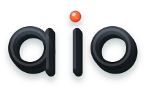

Brand kit · v1.1.0
aio — all-in-one
Identity system for the auto-connect layer of AI coding agents. Motif: three streams, one node — many agents, repos and tools converging into a single context. Flat, geometric, no gradients.
Lockup
Primary horizontal lockup: app tile + geometric wordmark. The i-dot carries the accent, echoing the convergence node.
left: paper background · right: ink background (reversed treatment)
Mark & tile
app tile · mark on light · mark on ink · favicon (same geometry, tuned for 32 px)
Wordmark

single-color letterforms (constructed paths — no font dependency)
Monochrome
single-ink fallbacks for embossing, fax-grade contexts and print
Real sizes
Palette
CLI banner
Console identity: strict 22-column grid — glyphs are joined row-by-row from fixed-width parts, so the letters can never drift out of alignment.
██████ ████ ██████ ██ ██ ██ ██ ██ ██ ██ ██ ██ ██ ████████ ██ ██ ██ ██ ██ ██ ██ ██ ██ ██ ████ ██████ all-in-one v1.1.0 — auto-connect AI agents to your repos, tools & skills GPL-3.0 · https://github.com/MRaihan-XXL/all-in-one
Usage rules
- Keep clear space equal to the node diameter around the mark.
- Use the accent only for the node / i-dot — never for body text.
- Reverse to paper-on-ink on dark surfaces.
- Scale the favicon geometry below 64 px; full mark above.
- No gradients, glows, or starbursts on the mark.
- Don’t stretch, rotate, or recolor the streams.
- Don’t outline the tile or add drop shadows.
- Don’t place the ink mark on busy photos.